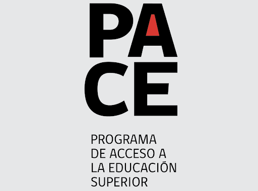

JOSE-IGNACIO CALDERON
Economist and Researcher
Home
About
Research
Presentations
Teaching
Media
In the Media
Opinion columns, letters, and press coverage of my work.

PACE is not an arbitrary expense: it is social mobility
Letter to the Editor
El Mostrador
. May 1st, 2026.
A gas mask for education? The effect of decontamination policies on student performance
Press Coverage
Diario Financiero: Contrafactual
. March 21st, 2025.